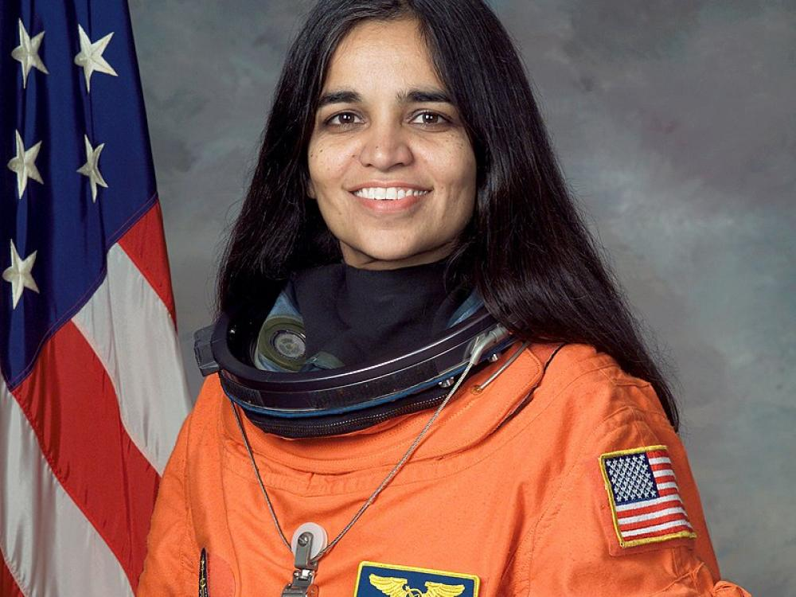

You must enjoy the journey because whether or not you get there, you must have fun on the way.

Biography
Kalpana Chawla was born on 17 March 1962 in Karnal Haryana. She studied in Karnal’s Tagore Baal Niketan Sr. Sec. School and then went to study aeronautical engineering at Chandigarh’s Punjab Engineering College.
After securing a Master's Degree in aerospace engineering from the University of Texas in 1984, she earned a doctorate of philosophy in aerospace engineering from the University of Colorado.
Her stint with NASA began in 1988 when she started working at the Ames Research Centre.
Her first space mission began on 19 November 1997, as part of the six-astronaut crew that flew the space shuttle Columbia. By doing so, she came the first woman of Indian origin to go to space.
You can learn more about this incredible lady on wikipedia